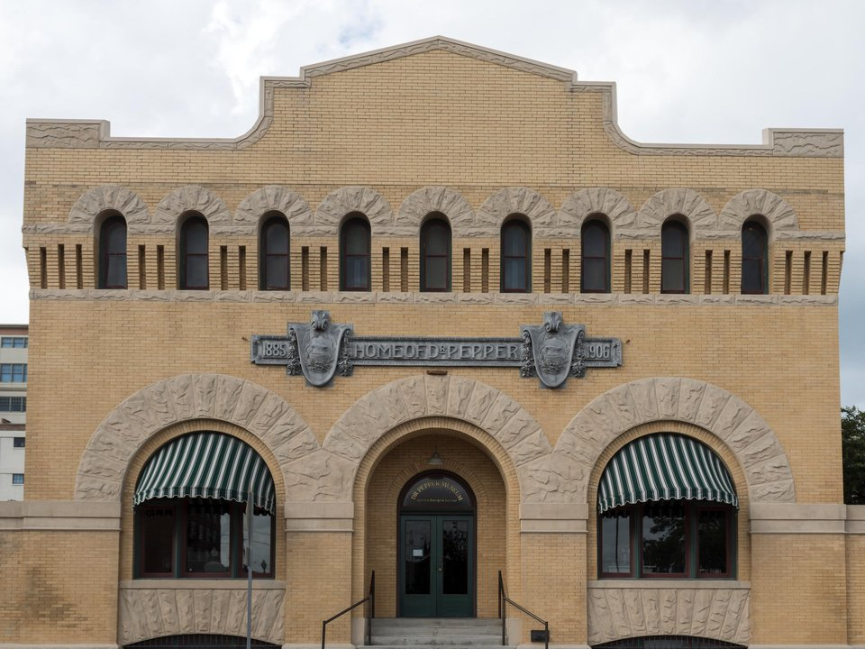

Downtown · Boutique hotel
Hotel 1928
The Gaines family’s Art Deco hotel in a restored Masonic temple.
Official details for Hotel 1928Shiplap, silos and mammoths.
Waco became a weekend destination when Chip and Joanna Gaines turned two old cotton-seed silos into Magnolia Market, and the city has grown a lively food and hotel scene around it. Land at Waco Regional, stay at the Gaines’s Hotel 1928, browse the Silos, have breakfast at Magnolia Table, then visit the Dr Pepper Museum in the building where the drink was bottled and see fossil mammoths where they fell at Waco Mammoth National Monument.

Time illustration: direct distance at 150 KTAS plus 15 minutes for departure and arrival, matching the discovery page. Use ForeFlight for your actual flight plan.
KACT, Waco Regional, is a towered Class C airport at 516 feet with runways of 7,107 and 5,103 feet, about 15 minutes from downtown.
Waco Regional Airport, Waco, TX
TSTC Waco (KCNW) and McGregor Executive (KPWG) are nearby general-aviation alternatives. No live fuel price is shown.
Texas flying: hot, bumpy summer afternoons with pop-up thunderstorms; spring severe weather (hail, tornadoes and squall lines) from March to June; gusty south winds; and low morning stratus that spreads inland from the Gulf. About 930 nm from Myrtle Beach: a long cross-country day with two fuel stops. Plan four or more nights, or break the trip with an overnight on the way.
Rates and availability need travel dates. Book early for Baylor football and Silos events.
The Gaines family’s Art Deco hotel in a restored Masonic temple.
Official details for Hotel 1928A Czech-inspired hotel with a brewery, a beer spa and a rooftop restaurant.
Official details for PivovarA downtown boutique hotel with a rooftop bar and spa.
Official details for Hotel HerringboneHotels in Waco.
Destination Waco for More places to stayReserve weekend dinners.
Breakfast and lunch from Joanna Gaines; expect a wait.
Official details for Magnolia TableSeasonal dishes on the rooftop and Czech-inspired brewery food.
Official details for PivovarSouthern classics in a gas-station-themed diner downtown.
Official details for Jake’s Texas Tea HouseRestaurants in Waco.
Destination Waco for More restaurantsThe Silos are busiest on Saturdays.
This prototype links to the local visitor site. It does not yet match events to your travel dates.
Seasonal festivals at the Silos.
Magnolia for Silos eventsGame days on the Brazos.
Destination Waco for Baylor footballRestaurants and shops.
Destination Waco for DowntownCheck the local calendar when choosing a weekend, and confirm dates and tickets with the organizer.
A sample Waco weekend. This is a long flight; plan four or more nights. No bookings or availability confirmed.
Land at KACT mid-morning.
The Silos.
The Dr Pepper Museum, then back to the airport.
Land at KACT, subject to weather and your actual flight plan.
The Silos.
Dinner downtown.
Breakfast at Magnolia Table.
The Dr Pepper Museum and the mammoths.
Dinner near Hotel 1928.
Cameron Park.
Return the car and allow time at the FBO.
Texas afternoons bring heat, bumps and storms; leave in the morning.
Breakfast at Magnolia Table.
Waco Mammoth National Monument.
Dinner downtown.
These details make the difference between an appealing list and a usable getaway.
Hotel 1928, then Magnolia Table plans.
About 930 nm from Myrtle Beach: a long day.
Go to the Silos on a weekday morning if you can.
March to May and October to November.
Research-based selections, not personal-visit endorsements. Researched November 1, 2026. Confirm hours, prices and availability directly with each place before booking. Spotted something out of date, or have a favorite we missed? Email us at hello@wingawayweekends.com.
WingAway Weekends helps you discover the destination. Use ForeFlight and current official aviation information for route, performance, weather, NOTAMs and preflight decisions. Flight planning and PIC responsibility stay with the pilot.